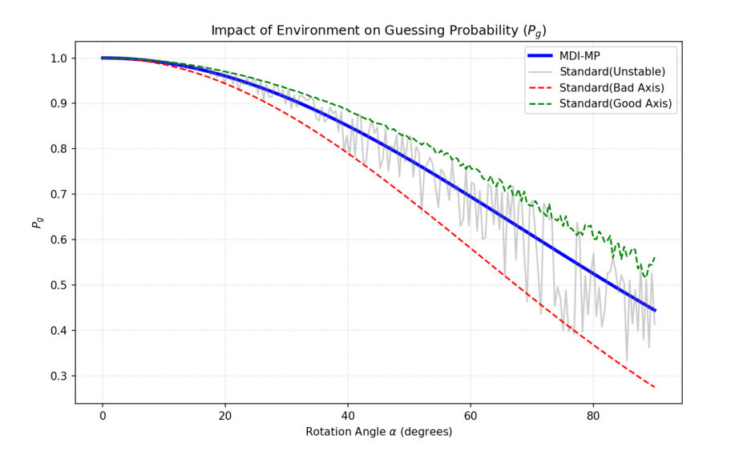

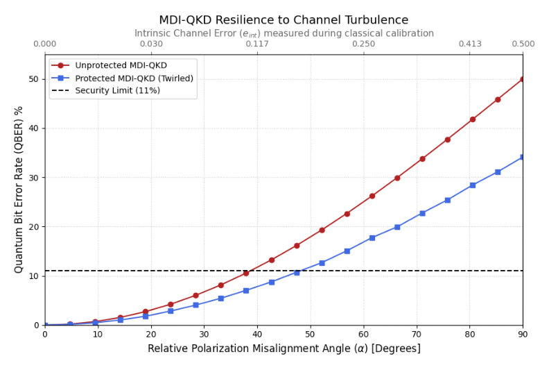
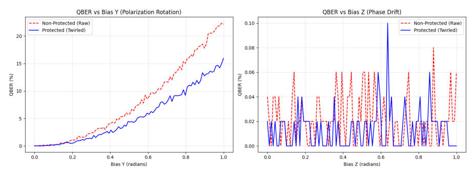
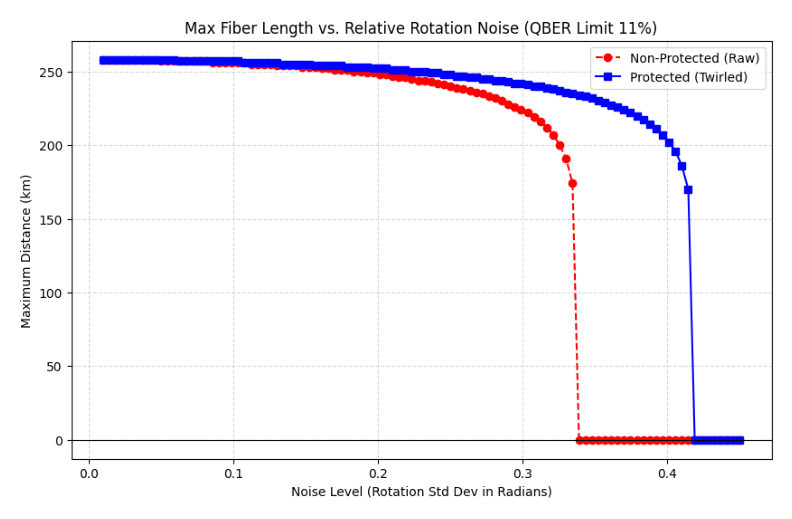
← Index · ← Previous · Next →
Authors: Piotr Garbaczewski, Mariusz Żaba
Type: theory · Category: statistical mechanics · PDF: https://arxiv.org/pdf/2605.07824v1
Analysis basis: abstract only; PDF text extraction failed or PDF unavailable
Topic relevance: methods for driven-dissipative 3/5 · non-equilibrium dynamics 2/5 · quantum measurements 2/5
Summary. The paper proposes a way to interpret Feynman-Kac diffusion processes with negative potentials by treating the negative regions as branching or cloning rates. This allows for a consistent probabilistic description of processes where killing effects are overcompensated. The authors use computer-assisted methods to demonstrate this for one-dimensional double-well systems.
Why it may be interesting. This is relevant for researchers in open quantum systems and many-body dynamics as it provides a new probabilistic framework for understanding the evolution of systems governed by Schrödinger-type operators with complex potentials.
Main problem. The paper investigates the probabilistic interpretation of Feynman-Kac kernels when the associated potential contains negative regions, which complicates the standard interpretation of killing rates.
Main result. The authors demonstrate that the 'taming' of killing effects in relaxing Feynman-Kac kernels can be interpreted through a process involving both killing and branching (cloning) rates, providing a consistent path-wise background for these diffusions.
Method. The study employs computer-assisted path-wise arguments to validate the killing/branching taming scenario for nonlinear model systems.
Model / system. The study focuses on one-dimensional nonlinear model systems, specifically focusing on Feynman-Kac potentials with double-well shapes.
Key observables. Probability density functions, Feynman-Kac kernels, and the killing/branching rates.
Important parameters / regimes. The sign and magnitude of the Feynman-Kac potential V(x), particularly the existence of negative subdomains.
Assumptions / limitations. The potential V(x) is assumed to be continuous, confining, and bounded from below.
Paper structure. The paper presents a theoretical framework for interpreting Feynman-Kac potentials with negative values, followed by computer-assisted path-wise arguments applied to one-dimensional nonlinear models, with a focus on double-well potentials.
Relaxation to equilibrium of a drifted Brownian motion is quantified by a probability density function, whose main (multiplicative) entry is an inferred Feynman-Kac kernel of the Schrödinger semigroup operator. Although seemingly devoid of a natural probabilistic significance (except for its explicit path integral definition), the pertinent kernel relaxes to equilibrium as well. The implicit Feynman-Kac potential ${\cal{V}}(x)$, continuous, confining and bounded from below, may take negative values. If positive, ${\cal{V}}(x)$ can be interpreted as the killing rate of the decaying diffusion process. In case of relaxing F-K kernels the killing effects are tamed (often overcompensated). The taming inavoidably appears in conjunction with the existence of the negativity subdomains of ${\cal{V}}(x)$ in $R$. If locally ${\cal{V}}(x) < 0$, its sign inversion $- {\cal{V}}(x)$ can be interpreted as the branching (cloning, alternatively bifurcation) rate in the course of the other wise free random motion. The arising killed diffusion processes with branching, we interpret as the possible path-wise background of tamed (relaxing) Feynman-Kac diffusions. We present acomputer-assisted path-wise arguments, towards a consistency of the killing/branching taming scenario, for a number of nonlinear model systems in one space dimension. Special attention is paid to Feynman-Kac potential shapes, presumed to be in the double well form, where an analytic access to eigenvalues and eigenfunctions is scarce beyond the semiclassical regime.
Authors: Valerio Scarani, Antoine Suarez
Type: theory · Category: quantum information and computing · PDF: https://arxiv.org/pdf/2605.07228v1
Analysis basis: full PDF text, analyzed in chunks
Topic relevance: quantum measurements 3/5 · entanglement & information structure 2/5
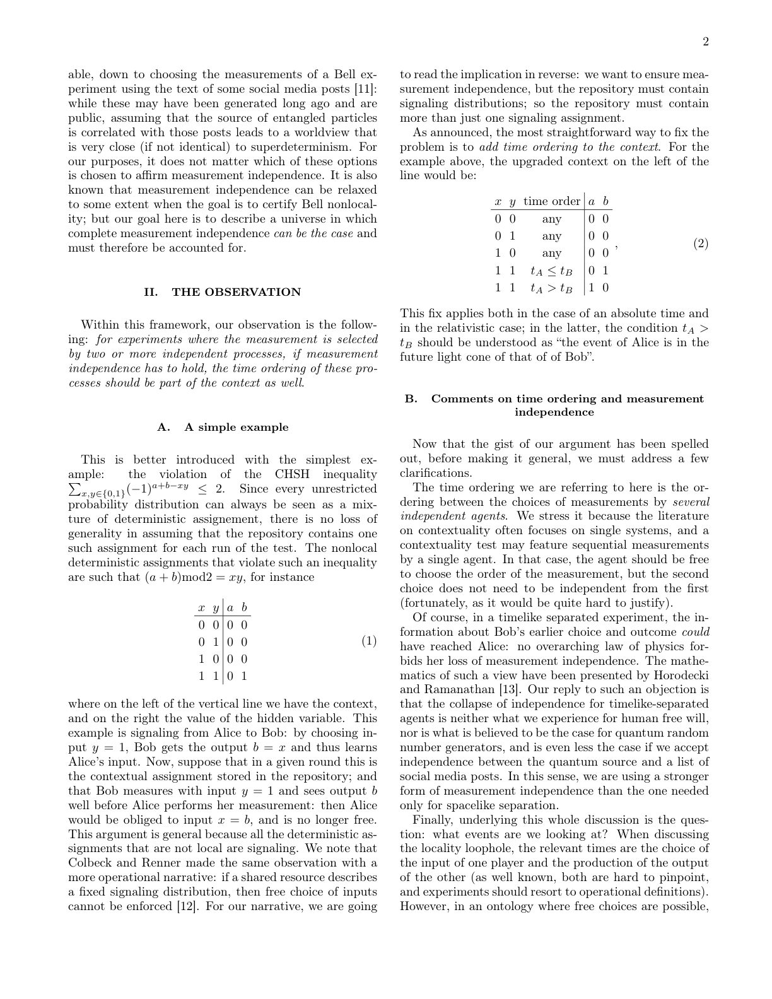
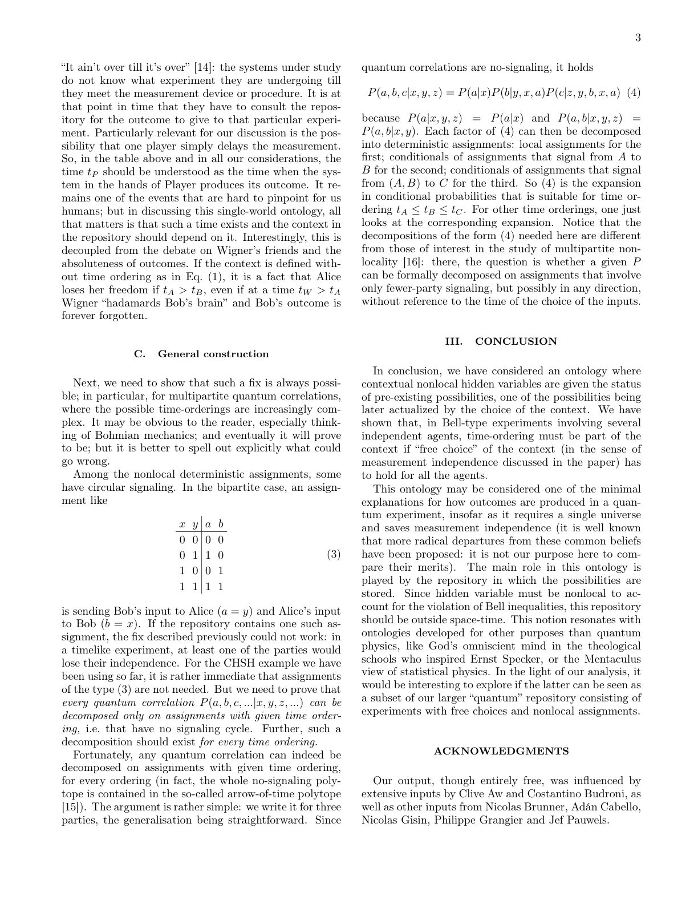
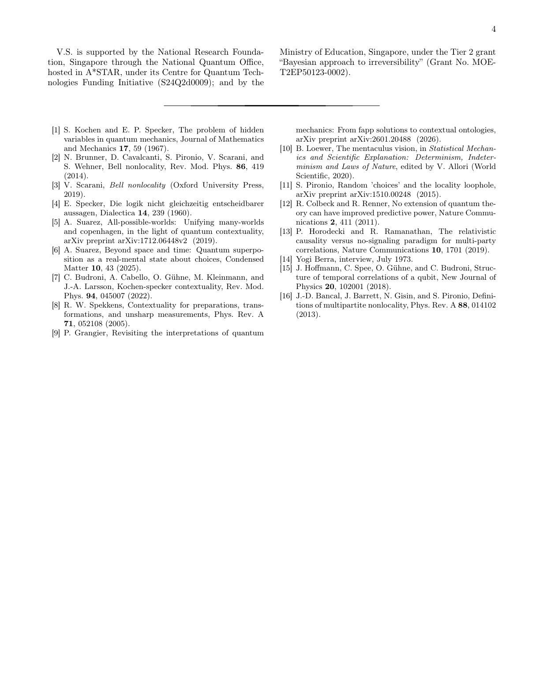
Summary. The paper shows that if one assumes a nonlocal hidden variable model where values are stored outside spacetime, the model must account for the time-ordering of measurements to prevent the loss of agent independence. This prevents 'circular signaling' and ensures that the choice of one agent does not pre-determine the freedom of another in timelike configurations. This result offers a way to maintain a single-world ontology while respecting the principle of free choice.
Why it may be interesting. It provides a fundamental ontological perspective on the nature of nonlocality and the role of time in quantum correlations, which is relevant to the foundational aspects of quantum information and the interpretation of multipartite entanglement.
Main problem. The paper addresses the conflict between Kochen-Specker nonlocal hidden variables and the requirement of measurement independence (free choice) for multiple agents in Bell-type experiments.
Main result. The authors demonstrate that for a nonlocal ontology to remain consistent with agent independence, the measurement context must include the time-ordering of the agents' choices, not just the measurement settings.
Method. The authors use a proof by contradiction involving signaling and a decomposition of multipartite quantum correlations into conditional probabilities based on an arrow-of-time polytope.
Model / system. An 'All-Possible-Experiments' (APEX) ontology where nonlocal hidden variables are stored in a repository outside of spacetime, involving multiple agents (e.g., Alice and Bob) in spacelike and timelike configurations.
Key observables. Measurement settings (inputs), measurement outcomes, and the temporal sequence of measurement events.
Important parameters / regimes. Measurement independence (free choice), time-ordering of measurement events, and the signaling between agents.
Assumptions / limitations. The existence of a repository of pre-existing possibilities outside spacetime, a single-world ontology, and a strong form of measurement independence.
Figures summary. Table 1 shows a nonlocal deterministic assignment for CHSH that allows signaling; Table 2 shows the upgraded context including time-ordering; Table 3 illustrates circular signaling.
Paper structure. The paper begins by defining the APEX ontology, identifies the signaling conflict in Bell-type experiments, proposes time-ordering as a solution to preserve measurement independence, and generalizes the result to multipartite systems using probability decomposition.
We consider an ontology, in which contextual nonlocal hidden variables are stored as pre-existing possibilities in a repository outside space-time; and in which the context can be chosen ``freely'' (measurement independence) by each agent, both in spacelike and timelike configurations. We show that, in Bell-type experiments involving several agents, for this ontology to be consistent, the context must include not only the measurements that can be performed, but also the time ordering of the choices of different agents.
Authors: Anton Hul, Matija Medvidović, Juan Carrasquilla
Type: theory · Category: numerical methods · PDF: https://arxiv.org/pdf/2605.07779v1
Analysis basis: full PDF text, analyzed in chunks
Topic relevance: analog quantum simulation 3/5 · entanglement & information structure 2/5
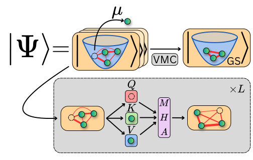
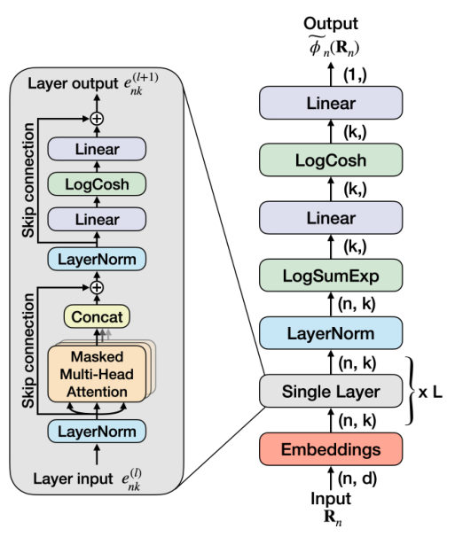
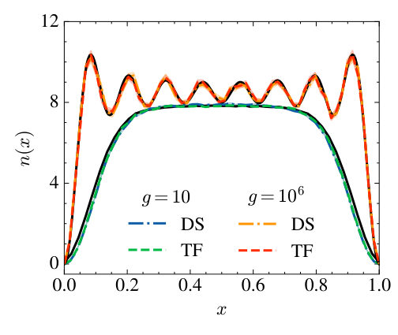
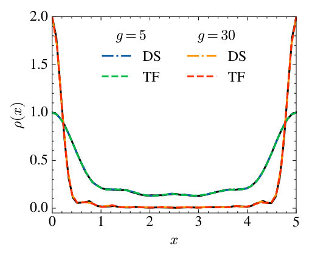
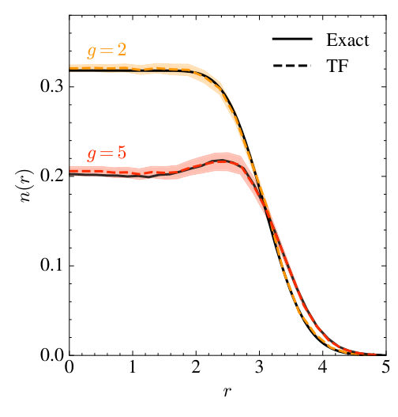
Summary. The authors present a new Transformer-based neural network architecture designed to simulate bosonic systems in the grand canonical ensemble. This method allows for particle number fluctuations driven by a chemical potential, enabling the study of density profiles and condensate fractions from first principles. The approach demonstrates state-of-the-art accuracy for both 1D and 2D many-body models.
Why it may be interesting. It provides a powerful new numerical tool for simulating realistic cold atom and photonic systems where particle number is not fixed, bridging the gap between NQS and grand canonical physics.
Main problem. Extending Neural Network Quantum States (NQS) from fixed particle number ensembles to the grand canonical ensemble to simulate bosonic systems with variable particle numbers.
Main result. The proposed Transformer-based architecture achieves highly accurate ground-state energies and reproduces exact analytical results for 1D and 2D bosonic models, outperforming previous Deep Sets architectures.
Method. A Transformer-based ansatz using masked multi-head self-attention and Variational Monte Carlo (VMC) with Metropolis-Hastings sampling in Fock space.
Model / system. Bosonic quantum field theories in the grand canonical ensemble, specifically including the 1D Lieb-Liniger and Calogero-Sutherland models, and 2D versions of the Calogero-Sutherland and harmonically trapped bosonic systems.
Key observables. Ground-state energy, average particle number, one-body reduced density matrix (OBDM), condensate fraction, and particle number density profiles.
Important parameters / regimes. Chemical potential (mu), interaction strength (g), particle number fluctuations, and the use of a masking mechanism for variable N.
Assumptions / limitations. The architecture assumes the state can be represented as a direct sum of n-particle sectors and neglects certain three-body divergence terms in the 2D Jastrow factor.
Figures summary. Figure 1 and 2 show the Transformer architecture and MHA mechanism; Figures 3-5 display particle density and OBDM for various models; Figure 8 shows optimization convergence of energy and variance.
Paper structure. The paper introduces the scientific problem of GCE simulation, details the Transformer-based neural network architecture and physical constraints, presents benchmarking against 1D and 2D models, and concludes with performance comparisons and scalability discussions.
Variational Monte Carlo calculations have recently reached state-of-the-art accuracy in the approximation of ground state properties of quantum many-body systems. Making use of flexible neural quantum states and automatic differentiation has bypassed traditional computational obstacles such as reliance on basis sets. In this paper, we propose a neural quantum state architecture capable of representing symmetric bosonic wavefunctions in Fock space, enabling the study of systems with variable particle number. By supplementing our variational state with Monte Carlo sampling and geometric optimization, we demonstrate competitive variational energies across an array of one- and two-dimensional systems, converging to the physical boson number under a set chemical potential. Our approach enables accurate estimates of one-body reduced density matrices, opening access to observables such as condensate fractions and radial density profiles from first principles. Our method opens the door to numerical predictions of key measurable quantities in practical grand canonical systems.
Authors: Xiaoxuan Shi, Tiantao Qu, Xianbin Wu, Mudi Wang, Lei Zhang, Jun Chen
Type: theory · Category: disordered systems and neural networks · PDF: https://arxiv.org/pdf/2605.07092v1
Analysis basis: abstract only; PDF text extraction failed or PDF unavailable
Topic relevance: Kondo & dissipative impurity 2/5 · analog quantum simulation 2/5 · non-equilibrium dynamics 2/5 · spintronics-quantum-optics interface 2/5
Summary. The paper reveals that weak disorder in photonic Chern insulators can disrupt unidirectional light transport by creating a trivial impurity band that enables reciprocal transport via 'necklace states'. This discovery shows that topological edge states are more sensitive to specific impurity frequencies than previously thought. This is important for designing robust photonic integrated circuits.
Why it may be interesting. It provides new insights into how local defects can fundamentally alter global transport properties in topological systems, which is critical for the stability of photonic quantum networks and topological insulators.
Main problem. Understanding how weak disorder from impurities affects the robustness of unidirectional chiral edge states in photonic Chern insulators.
Main result. Discovered a mechanism where weak disorder creates a topologically trivial impurity band that couples with chiral edge states, forming reciprocal 'necklace state' channels that break unidirectional transport.
Method. Numerical simulation of a magnetic photonic crystal where magnetized rods are randomly replaced with nonmagnetized impurities to study the formation of defect states and impurity bands.
Model / system. A magnetic photonic crystal acting as a photonic Chern insulator, subject to weak disorder via the random replacement of magnetized rods with nonmagnetized impurities.
Key observables. Unidirectional propagation of chiral edge states, formation of impurity bands, and the emergence of reciprocal necklace state transport channels.
Important parameters / regimes. Excitation frequency relative to the single impurity defect state frequency; level of disorder (number of impurities).
Assumptions / limitations. The disorder is considered 'weak' and consists of replacing a small number of rods; global topological invariants are preserved.
Paper structure. The paper introduces the importance of topological protection, identifies the problem of disorder-induced fragility, presents the discovery of the impurity band mechanism, and discusses the implications for topological transport stability.
Photonic Chern insulators enable unidirectional light transport protected by nontrivial band topology -- essential for robust photonic integrated circuits and error-free communication. However, disorder from impurities or defects inevitably exists in practical applications, yet how weak disorder affects topological chiral edge states remains insufficiently understood. Here, we reveal a previously unrecognized mechanism by which weak disorder can disrupt robust propagation of chiral edge states in photonic Chern insulators, despite the preservation of global topological invariants. By randomly replacing a small number of magnetized rods with nonmagnetized impurities in a magnetic photonic crystal, we find that when the excitation frequency approaches the single impurity defect state frequency, weak coupling between spatially extended defect states forms a topologically trivial impurity band inside the topological gap. This enables coexistence and coupling of defect states and chiral edge states. The reciprocal "necklace state" transport channels formed by coupled defect states break the expected unidirectional propagation in topological Chern insulators with weak disorder. Our work reveals that topological chiral edge state and disorder interactions are more intricate than previously understood and provides new insights into stability and control of topological transport in realistic applications.
Authors: Wei Xie, Ji-Chong Yang
Type: theory · Category: quantum information and computing · PDF: https://arxiv.org/pdf/2605.06907v1
Analysis basis: full PDF text, analyzed in chunks
Topic relevance: correlated / nonlocal dissipation 2/5 · entanglement & information structure 2/5 · quantum measurements 2/5
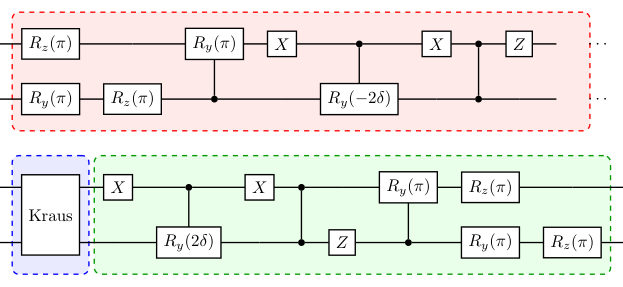
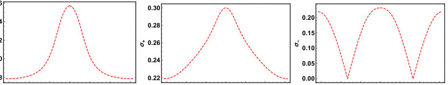
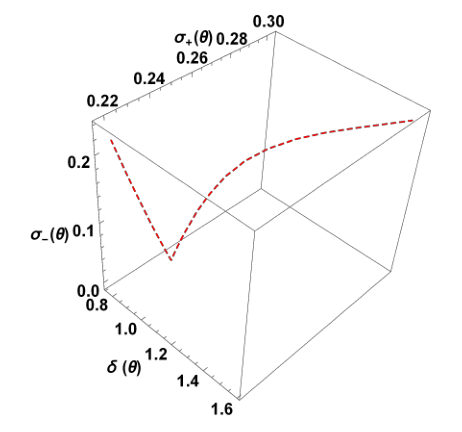
Summary. This paper proposes a new framework where high-energy scattering processes are viewed as constrained quantum circuits. By decomposing the scattering T-matrix into quantum gates and Kraus operators, the authors show that the underlying dynamics of particle collisions can be understood through the lens of quantum information theory.
Why it may be interesting. This work provides a novel bridge between high-energy physics and quantum information, offering a framework to study scattering dynamics using the language of quantum gates, Kraus operators, and circuit-based information loss.
Main problem. The paper seeks to reformulate high-energy particle scattering processes, which are traditionally analyzed via final-state properties, as structured, operational quantum circuits.
Main result. The authors successfully demonstrate that the T-matrix for lepton scattering can be decomposed into a two-qubit quantum circuit consisting of Pauli gates, controlled rotations, and CNOT gates, alongside a non-unitary Kraus operator.
Method. The study employs Singular Value Decomposition (SVD) to separate coherent mixing from non-unitary effects and Cosine-Sine Decomposition (CSD) to map the resulting unitary matrices onto elementary quantum gates.
Model / system. The physical system is the helicity degrees of freedom in high-energy lepton scattering, specifically the electron-positron annihilation process (e+e- to mu+mu-) involving photon and Z-boson exchange.
Key observables. Helicity indices, scattering angle (theta), and singular values (sigma_plus, sigma_minus) representing transmission strength.
Important parameters / regimes. Weinberg angle (theta_W), electroweak couplings (gL, gR), and the dimensionless momentum parameter (mu) at the 1 TeV scale.
Assumptions / limitations. The analysis assumes fixed kinematic configurations and utilizes the high-energy/massless limit where helicity coincides with chirality.
Figures summary. Figure 2 shows the dependence of circuit parameters on the scattering angle; Figure 3 illustrates the dynamical correlation between unitary and non-unitary components; Figure 4 displays the tree-level Feynman diagram for the process.
Paper structure. The paper moves from the standard S-matrix description to a T-matrix operator formulation, applies SVD and CSD for matrix decomposition, maps the results to a quantum circuit architecture, and concludes with an analytical demonstration using lepton scattering.
Scattering processes in high-energy physics are inherently quantum mechanical, yet are typically analyzed at the level of final states, where entanglement appears as a property of the outcome rather than a consequence of the underlying dynamics. We reformulate scattering at the level of the process itself by representing helicity transition matrices as quantum circuits. Once the kinematic configuration and scattering channel are fixed, the problem reduces to a finite-dimensional quantum map, making a circuit description natural. Within this framework, an example of the process $e^+e^-\to μ^+μ^-$ is shown, which decomposes into unitary and non-unitary components, corresponding to coherent mixing and postselection effects. This representation reorganizes the amplitude into distinct operational elements, providing a perspective in which collider processes can be viewed as constrained quantum circuits and their entanglement structure can be understood in terms of the underlying circuit dynamics, opening the door to analyzing their properties using the language of quantum information.
Authors: Rokas Veitas, Ahmed Khalifa, Francisco Machado, Shubhayu Chatterjee
Type: theory · Category: strongly correlated electrons · PDF: https://arxiv.org/pdf/2605.06852v1
Analysis basis: abstract only; PDF text extraction failed or PDF unavailable
Topic relevance: Rydberg arrays 2/5 · analog quantum simulation 2/5 · exotic spin models in light-matter 2/5
Summary. This paper shows that spin-orbit interactions can induce a chiral ferromagnetic phase stabilized by quantum fluctuations, even when classical models predict only collinear states. This mechanism generates spontaneous scalar orbital chirality and leads to an enhanced thermal Hall effect. The findings are applicable to a variety of platforms including moiré materials and Rydberg-atom arrays.
Why it may be interesting. The paper demonstrates how quantum fluctuations can actively stabilize novel topological/chiral phases rather than just destroying order, which is highly relevant to many-body dynamics and Rydberg-atom arrays.
Main problem. Investigating how magnetization-non-conserving couplings (spin-orbit interactions) can overcome the suppression of quantum fluctuations in ferromagnetic materials to stabilize new phases.
Main result. The discovery of a chiral ferromagnet and a chiral stripe regime that are stabilized by quantum fluctuations, characterized by spontaneous scalar orbital chirality.
Method. Theoretical analysis of the modification of the classical phase diagram by spin-orbit interactions and the evaluation of fluctuation-induced effects.
Model / system. A ferromagnetic system featuring magnetization-non-conserving couplings and spin-orbit interactions, relevant to moire heterostructures, Rydberg-atom arrays, and non-Kramers spin materials.
Key observables. Orbital chirality, scalar orbital chirality, and the thermal Hall effect.
Important parameters / regimes. Magnetization-non-conserving couplings, spin-orbit interactions, and the presence of quantum fluctuations.
Assumptions / limitations. The study assumes the presence of spin-orbit interactions that do not conserve magnetization.
Paper structure. The paper introduces the problem of suppressed fluctuations in ferromagnets, presents the mechanism of fluctuation-stabilized chiral phases via spin-orbit coupling, describes the resulting phase diagram (including chiral stripes), and discusses transport signatures and experimental relevance.
In general, quantum fluctuations are suppressed in ferromagnetic materials because they admit a simple unfrustrated ground state, greatly limiting the scope of phenomena that can be observed in these materials. In this work, we show how magnetization-non-conserving couplings fundamentally alter this paradigm by demonstrating the existence of a chiral ferromagnet that is stabilized by quantum fluctuations. More specifically, we show how these spin-orbit interactions modify the classical phase diagram; whereas a classical analysis predicts only collinear states, we observe fluctuation-stabilized phases, including a ferromagnet with large orbital chirality and a chiral stripe regime. We elucidate how such couplings spontaneously generate a scalar orbital chirality, in contrast to conventional mechanisms which rely upon a field-induced canting of vector chiral order. The resultant chiral states exhibit distinct transport signatures, namely an enhanced thermal Hall effect, and are of direct relevance to moiré heterostructures, Rydberg-atom arrays, and solid-state materials featuring non-Kramers spins.
Authors: Papon Pewkhom, Nattee Jeennugool, Norshamsuri Ali, Rosdisham Endut, Syed Alwee Aljunid, Pruet Kalasuwan
Type: theory · Category: quantum information and computing · PDF: https://arxiv.org/pdf/2605.07229v1
Analysis basis: full PDF text, analyzed in chunks
Topic relevance: correlated / nonlocal dissipation 2/5 · interference shaping light 2/5 · entanglement & information structure 1/5 · quantum measurements 1/5




Summary. This paper introduces a hardware-free method to stabilize polarization in MDI-QKD networks using a mathematical twirling protocol. By applying a shared random unitary transformation, the researchers transform unpredictable channel drifts into predictable white noise, significantly increasing the tolerance to fiber-induced turbulence.
Why it may be interesting. It presents an elegant application of group-theoretic twirling (unitary 2-designs) to transform complex, non-symmetric noise into a manageable, isotropic depolarizing channel, which is highly relevant to open quantum systems and quantum communication.
Main problem. Polarization instability and asymmetric channel turbulence in MDI-QKD cause arbitrary unitary drifts, leading to degraded Hong-Ou-Mandel interference and increased error rates.
Main result. The proposed Correlated Twirling protocol suppresses intrinsic channel noise by a factor of 2/3 and extends the angular misalignment tolerance from 38.7 to 47.9 degrees.
Method. A hardware-free algorithmic approach using a 12-element unitary 2-design to transform asymmetric geometric rotations into an isotropic Pauli depolarizing channel via virtual post-processing.
Model / system. An MDI-QKD star-type network with Alice and Bob sending weak coherent pulses to an untrusted central node (Charlie) through noisy optical fiber channels.
Key observables. Quantum Bit Error Rate (QBER), Guessing Probability (P_guess), and the depolarization parameter (eta).
Important parameters / regimes. Y-axis bias tolerance (increased from 0.68 to 0.84 rad), angular misalignment tolerance (38.7 to 47.9 degrees), and the 11% security threshold.
Assumptions / limitations. The protocol assumes a synchronized, public random beacon is available for Alice and Bob to apply the same unitary transformations.
Figures summary. Figure 1 compares the guessing probability of unprotected versus protected systems under varying levels of misalignment and noise.
Paper structure. The paper introduces the problem of polarization drift in MDI-QKD, proposes a Correlated Twirling protocol using a unitary 2-design, provides mathematical derivations for the resulting depolarizing channel, and validates the approach through Monte Carlo simulations of error rates and transmission distances.
Measurement-Device-Independent Quantum Key Distribution (MDI-QKD) provides unconditional security against detector vulnerabilities, but its practical deployment is severely hindered by asymmetric channel turbulence. Fluctuations in optical fibers induce arbitrary polarization drift, degrading Hong-Ou-Mandel interference and forcing extensive calibration downtime. In this work, we propose a hardware-free polarization stabilization technique utilizing a Correlated Twirling protocol based on a unitary 2-design. By applying a synchronized, public twirling supermap, Alice and Bob mathematically transform deterministic, asymmetric geometric rotations into an isotropic Pauli depolarizing channel. Executed entirely as a virtual post-processing step during classical sifting, this protocol mathematically suppresses intrinsic channel noise by a factor of 2/3. We demonstrate through exact quantum state simulations that this induced symmetry neutralizes catastrophic axis-dependent failures, extending the Y-bias tolerance from 0.68 to 0.84 radians. Furthermore, the protocol passively extends the absolute angular misalignment tolerance for the 11% security threshold from $38.7^\circ$ to $47.9^\circ$, sustaining secure key distillation over extended fiber distances in highly turbulent regimes where standard architectures fail. Inherently compatible with decoy-state weak coherent pulses, this algorithmic approach provides a highly scalable, resource-efficient framework for robust long-distance quantum networks.
Authors: Basanta Mistri, Vishal Ranjan, Siddharth Dhomkar
Type: both · Category: quantum information and computing · PDF: https://arxiv.org/pdf/2605.07332v1
Analysis basis: abstract only; PDF text extraction failed or PDF unavailable
Topic relevance: Keldysh / 2PI / non-Gaussian methods 2/5 · QC/QI experiment 2/5 · spintronics-quantum-optics interface 2/5
Summary. The paper investigates Er3+ doped CeO2 as a platform for quantum technologies, demonstrating that spin coherence can reach the second timescale under specific conditions. By optimizing concentration, temperature, and magnetic fields, the researchers show this material is a strong candidate for integrated quantum networks and memories.
Why it may be interesting. It provides critical insights into the control of open quantum systems (spin baths) and the engineering of long-lived quantum memories using specific material parameters and dynamical decoupling.
Main problem. The challenge of suppressing decoherence in rare-earth-ion-doped crystals to achieve long-lived spin qubits for scalable quantum networks.
Main result. Identified regimes where Er3+ electron spin coherence in CeO2 can approach the second timescale at sub-Kelvin temperatures and 10 ppb concentrations, with 10 ms coherence expected at 2 K.
Method. A combination of semiclassical simulations and detailed cluster correlation expansion (CCE) simulations to investigate coherence properties.
Model / system. Erbium (Er3+) doped cerium oxide (CeO2) crystals, focusing on the electron spin qubit in a host matrix with ultra-low nuclear spin concentration.
Key observables. Hahn-echo coherence times, spin decoherence rates, and the effect of dynamical decoupling protocols.
Important parameters / regimes. Magnetic field strength, pulse sequences, erbium concentration (specifically 10 ppb), spin temperature (sub-Kelvin and 2 K), and isotopic abundance.
Assumptions / limitations. The study assumes the validity of the cluster correlation expansion for modeling the spin bath and focuses on the dilute doping limit.
Paper structure. The paper introduces the potential of Er3+:CeO2, describes the simulation methodology (semiclassical and CCE), presents a systematic exploration of various physical parameters (field, temperature, concentration), and concludes with the implications for quantum networks.
Rare-earth-ion-doped crystals has emerged as a promising platform for quantum technologies, owing to their narrow telecom-band optical emission, long spin memory, and compatibility with silicon integrated photonic architectures. However, the realization of scalable quantum devices requires host materials with intrinsically dilute spin environments to suppress decoherence. In this context, erbium (Er$^{3+}$) doped cerium oxide (CeO$_2$) is an attractive candidate due to the ultra-low concentration of nuclear spins in the host matrix and its compatibility with silicon-based technologies. Here we perform a comprehensive investigation of the coherence properties of Er$^{3+}$ electron spin qubit in CeO$_2$ via semiclassical as well as detailed cluster correlation expansion simulations. By systematically exploring magnetic field strength, pulse sequences, erbium concentration, and spin temperature, we identify regimes where decoherence from the spin bath is strongly suppressed. Our investigations illustrate that at dilute doping concentration (of the order of 10 ppb) and sub-Kelvin temperatures, operation near clock transitions enables Hahn-echo coherence times to approach the second timescale even at natural isotopic abundance. Importantly, from a practical standpoint, coherence times on the order of $\sim 10$ ms are expected even at liquid helium temperature (about 2 K) for similar concentrations. Moreover, we demonstrate that an additional enhancement can be obtained with conventional multi-$π$-pulse dynamical decoupling protocols. Thus, our findings establish Er$^{3+}$ doped CeO$_2$ as a front-runner for realizing spin qubits, quantum memories, and integrated quantum networks.
Authors: Rafael Wagner, Ernesto F. Galvão
Type: theory · Category: quantum information and computing · PDF: https://arxiv.org/pdf/2605.07405v1
Analysis basis: full PDF text, analyzed in chunks
Topic relevance: entanglement & information structure 2/5 · quantum measurements 2/5
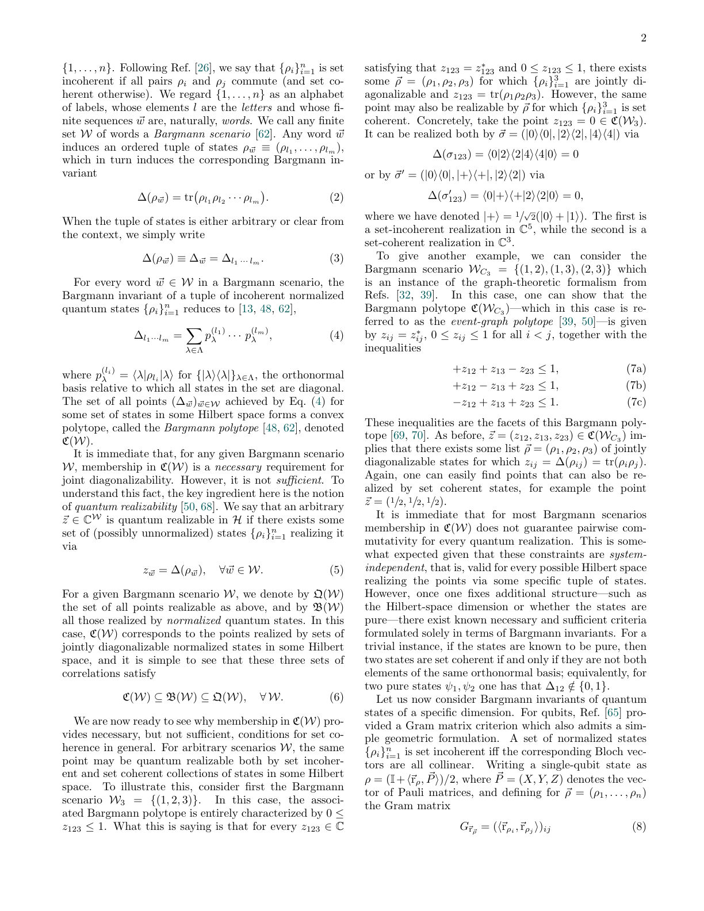
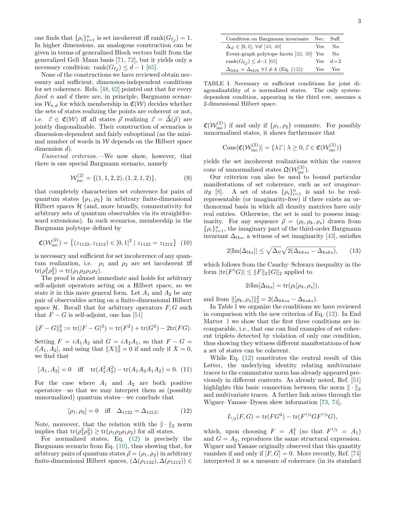
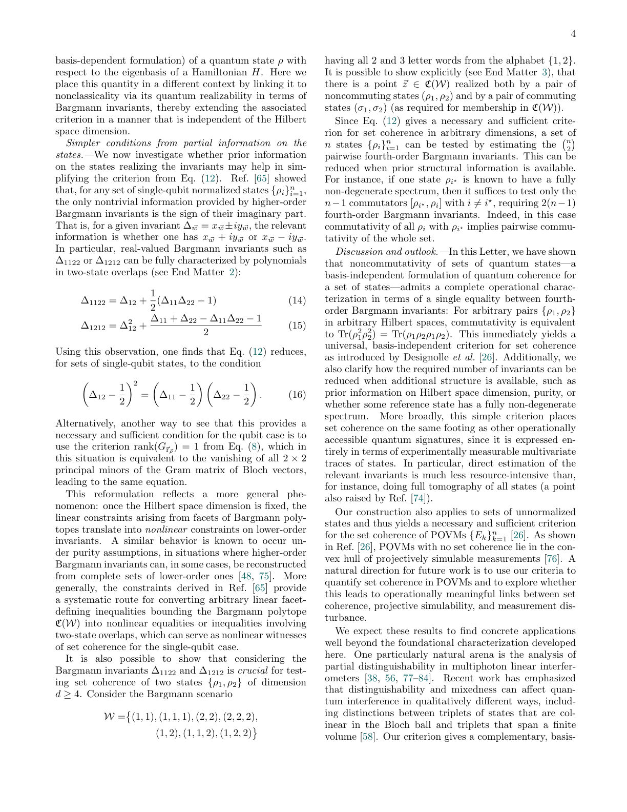
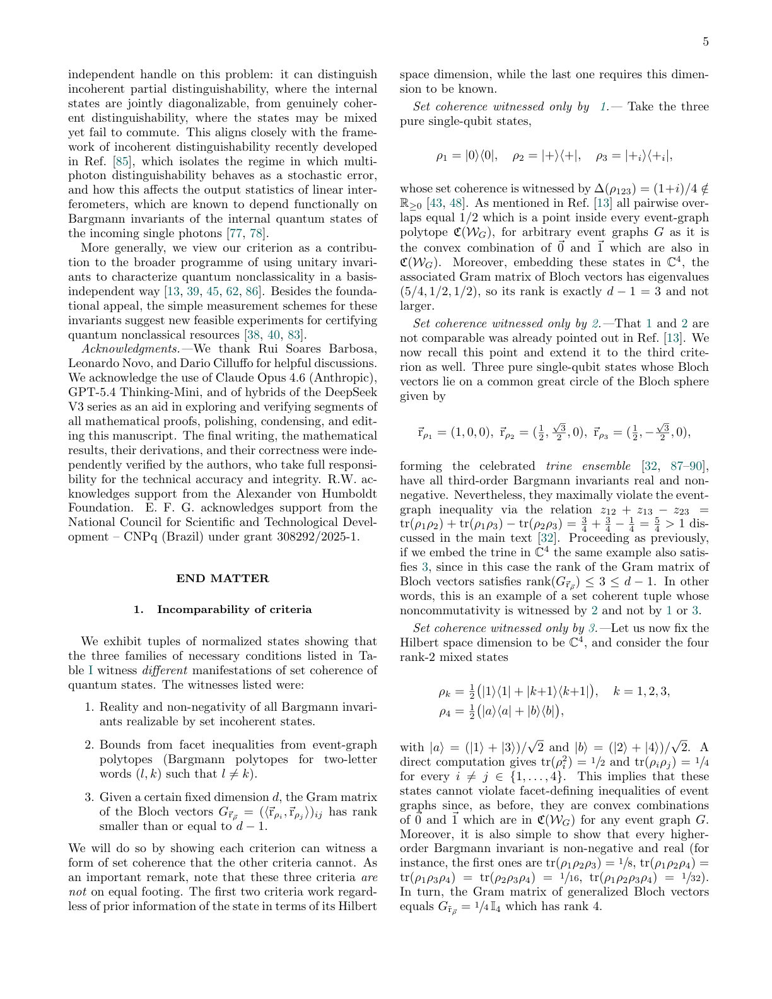
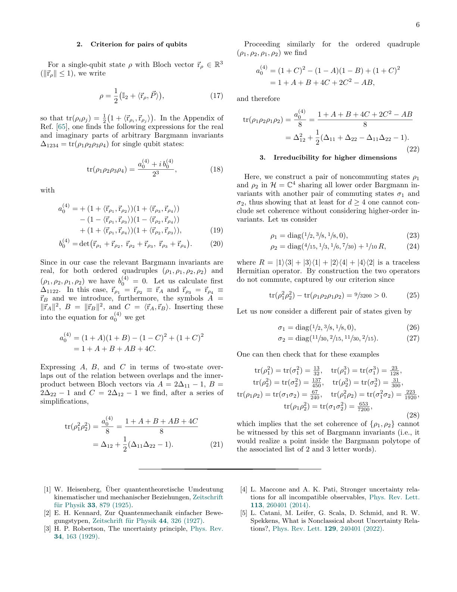
Summary. The paper presents a new, universal, and dimension-independent condition to check if two quantum states commute using a single equality of fourth-order Bargmann invariants. This approach bypasses the need for full state tomography and works for any finite dimension. It has direct applications in characterizing quantum nonclassicality and photon distinguishability.
Why it may be interesting. This provides a powerful, dimension-independent tool for certifying noncommutativity and nonclassicality, which is highly relevant for verifying quantum resources in photonic quantum computing and analyzing state distinguishability.
Main problem. Finding a universal, dimension-independent, necessary, and sufficient condition to determine if a set of quantum states or observables is jointly diagonalizable (commutes).
Main result. The authors establish that two quantum states commute if and only if the fourth-order Bargmann invariant equality tr(rho1^2 * rho2^2) = tr(rho1 * rho2 * rho1 * rho2) holds, providing a dimension-independent criterion.
Method. The study uses the mathematical framework of Bargmann invariants and multivariate traces, specifically analyzing the Hilbert-Schmidt norm of the commutator and comparing the new criterion against existing dimension-dependent and necessary-only conditions.
Model / system. The work considers arbitrary pairs of quantum states (pure or mixed) and self-adjoint operators acting on finite-dimensional Hilbert spaces, with specific applications discussed for qubits and photonic platforms.
Key observables. Fourth-order Bargmann invariants, purities, two-state overlaps, and the Hilbert-Schmidt norm of the commutator.
Important parameters / regimes. Finite-dimensional Hilbert space dimension (d), and the rank of the Gram matrix of Bloch vectors.
Assumptions / limitations. The primary result is derived for finite-dimensional Hilbert spaces.
Figures summary. The notes mention a comparative summary table (Table I) highlighting the superiority of the new criterion over existing methods.
Paper structure. The paper introduces the problem of set coherence, proposes a new universal criterion based on fourth-order Bargmann invariants, demonstrates its dimension-independence, provides simplified algebraic forms for qubits, proves the insufficiency of lower-order invariants for d >= 4, and compares the result to existing necessary conditions.
Noncommutativity of states and observables is a fundamental signature of quantum theory, and a minimal requirement for nonclassicality. We provide a universal necessary and sufficient condition for pairwise commutativity of quantum states $ρ_1$ and $ρ_2$: they commute if and only if $\mathrm{tr}(ρ_1^2ρ_2^2) = \mathrm{tr}(ρ_1 ρ_2 ρ_1 ρ_2)$. For qubits the identity simplifies to an equality between polynomials of purities and of the two-state overlap $\mathrm{tr}(ρ_1ρ_2)$. These multivariate traces (known as Bargmann invariants) are directly measurable, allowing commutativity tests that bypass full state tomography. We point out possible applications to the analysis of POVM simulability and partial photonic distinguishability.
Authors: Tianrui Tan, Evan J. D. Anderson, Michael S. Bullock, Boulat A. Bash
Type: theory · Category: quantum information and computing · PDF: https://arxiv.org/pdf/2605.08066v1
Analysis basis: abstract only; PDF text extraction failed or PDF unavailable
Topic relevance: entanglement & information structure 2/5 · quantum measurements 2/5
Summary. This paper explores sparse signaling techniques to achieve covert communication and sensing in bosonic channels. It reveals that the most undetectable signal is a simple mixture of vacuum and a single photon, and it maps out the trade-offs between staying hidden and maintaining signal performance.
Why it may be interesting. This paper is highly relevant to quantum optics and open quantum systems as it provides fundamental limits on communication and sensing using non-classical states in noisy, lossy environments.
Main problem. The study investigates how to optimize sparse signaling strategies to maintain covertness while performing communication and sensing tasks over bosonic channels.
Main result. The authors identify that the optimal input state for minimizing detectability is a mixture of just two consecutive photon-number states, specifically a mixture of vacuum and a single photon in the low-brightness regime.
Method. The researchers analyze sparse signaling strategies (transmitting constant power on a subset of channel uses) and characterize the input signal state that minimizes detectability.
Model / system. The study focuses on lossy thermal-noise bosonic channels, which are applicable to optical, microwave, and radio-frequency systems.
Key observables. detectability, communication performance, and sensing performance
Important parameters / regimes. number of channel uses (n), average output power (scaling as 1/sqrt(n)), and input-power thresholds
Assumptions / limitations. The analysis assumes the use of sparse signaling strategies where power is transmitted on approximately sqrt(n) out of n channel uses.
Paper structure. The paper introduces the problem of covertness and the square-root law, compares diffuse vs. sparse signaling, analyzes the optimal state structure for sparse signaling in bosonic channels, and explores the trade-offs between covertness and task performance.
Preventing signal detection in communication and active sensing requires careful control of transmission power. In fact, the square-root laws (SRL) for covert classical and quantum communication and sensing prescribe that the average output power per channel use scales as $1/\sqrt{n}$ for $n$ channel uses. Two strategies for achieving this are diffuse and sparse signaling. The former transmits signals with power decaying as $1/\sqrt{n}$ on all $n$ channel uses, which is convenient for mathematical analysis. The latter transmits constant-power signals rarely, on approximately $\sqrt{n}$ out of $n$ channel uses, while remaining silent on the others. This offers significant practical advantages in compatibility with modern digital transmitters. Here, we study sparse signaling over lossy thermal-noise bosonic channels, which describe quantumly many practical channels (including optical, microwave, and radio-frequency). We characterize the input signal state that minimizes detectability. We find an unintuitive optimal quantum state structure: a mixture of just two consecutive photon-number states. In particular, in the low-brightness regime, the optimal signal state is a mixture of vacuum and a single photon. Since these states are generally suboptimal for both communication and active sensing, we explore the resulting trade-off and identify input-power thresholds for transitions between optimizing for covertness vs. performance in communication and sensing tasks.
Authors: Xiao Ding, Dajun Wang, Xiaoling Cui
Type: theory · Category: quantum gases · PDF: https://arxiv.org/pdf/2605.07372v1
Analysis basis: full PDF text, analyzed in chunks
Topic relevance: analog quantum simulation 2/5 · non-equilibrium dynamics 2/5
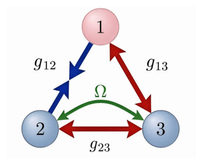
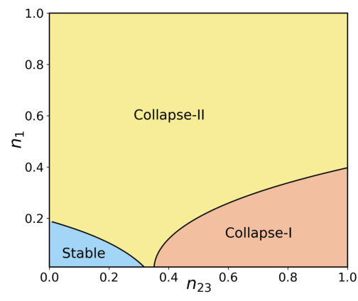
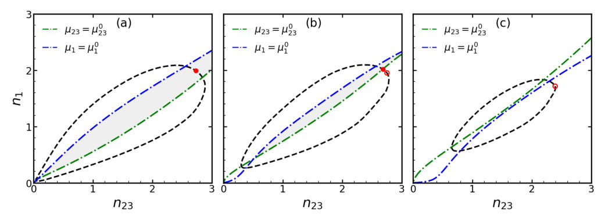
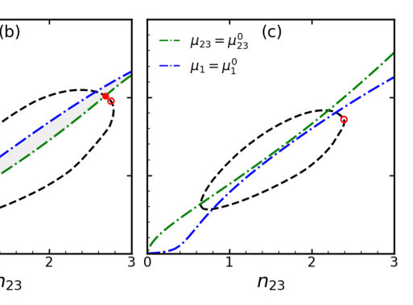
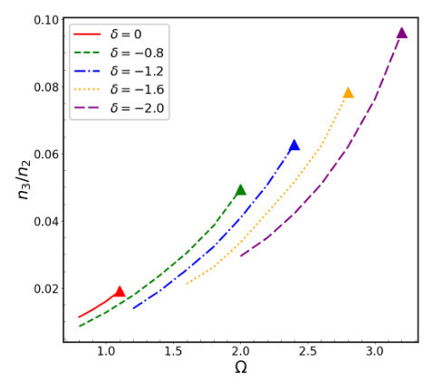
Summary. This paper proposes a method to create three-component quantum droplets by using Rabi coupling to attach a third species to an existing binary droplet. It identifies how Rabi coupling and detuning compete to either expand or destabilize the droplet. This work offers a new strategy for stabilizing multi-component quantum liquids in ultracold atomic mixtures.
Why it may be interesting. It provides a general route for engineering multi-component self-bound states using single-particle fields (Rabi coupling), which is highly relevant for controlling many-body dynamics and creating complex quantum fluids in AMO physics.
Main problem. The study investigates a new mechanism to realize three-component quantum droplets in ultracold Bose gases where only one inter-species interaction is attractive, addressing the challenge of stabilizing such droplets against repulsive forces.
Main result. The authors demonstrate that Rabi coupling can bind a third component to a binary droplet, and that while strong coupling increases the third component's fraction, it can be stabilized using finite magnetic detuning.
Method. The research employs mean-field analysis, Bogoliubov theory to incorporate Lee-Huang-Yang corrections, thermodynamic analysis in the thermodynamic limit, and numerical simulations using extended Gross-Pitaevskii equations.
Model / system. A three-component mixture of ultracold Bose gases, specifically a realistic Na-Rb system, where components 1 and 2 form a binary droplet and component 3 is coupled via Rabi coupling and detuning.
Key observables. Chemical potentials, density profiles (flat-top structure), density ratio (n3/n2), spin polarization, and stability regimes (Collapse-I and Collapse-II).
Important parameters / regimes. Rabi coupling strength (Omega), magnetic detuning (delta), inter-species/intra-species interaction strengths (g_ij), and scattering lengths (a_ij).
Assumptions / limitations. The analysis assumes spherical symmetry for the droplet configuration and is performed in the thermodynamic limit before being extended to finite sizes via GPE.
Figures summary. Fig 1 shows a schematic of the coupling mechanism; Fig 3 plots droplet solutions and stability regions in the density plane; Fig 4 shows the density ratio as a function of Rabi coupling; Fig 5 displays the numerical flat-top density profiles.
Paper structure. The paper introduces the mechanism, presents the theoretical model and Hamiltonian, details the thermodynamic and Bogoliubov stability analysis, provides numerical verification via GPE simulations, and discusses the implications for multi-component droplet stabilization.
We uncover a new mechanism for realizing three-component quantum droplets in ultracold Bose gases, where only one inter-species interaction is attractive. In this scheme, the inter-species attraction leads to a self-bound binary droplet, and the third component joins through Rabi coupling with one component of the binary droplet. We find that a stronger Rabi coupling leads to a larger fraction of the third component, but also destabilizes the entire droplet due to the involvement of more repulsive forces. Such instability can be remedied by a finite detuning between the Rabi-coupled components. We demonstrate these results in realistic Na-Rb mixtures, using both thermodynamic analyses and numerical simulations based on extended Gross-Pitaevskii equations. Our work outlines a general route for stabilizing multi-component droplets by bridging an existing binary droplet with additional components via suitable single-particle fields.
Authors: Pascal Sievers, Satoshi Ejima
Type: theory · Category: numerical methods · PDF: https://arxiv.org/pdf/2605.07559v1
Analysis basis: full PDF text, analyzed in chunks
Topic relevance: methods for driven-dissipative 2/5 · non-equilibrium dynamics 2/5
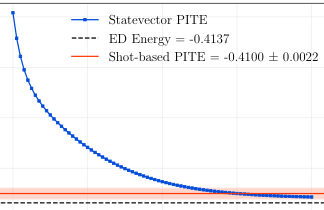
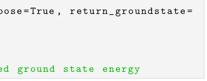
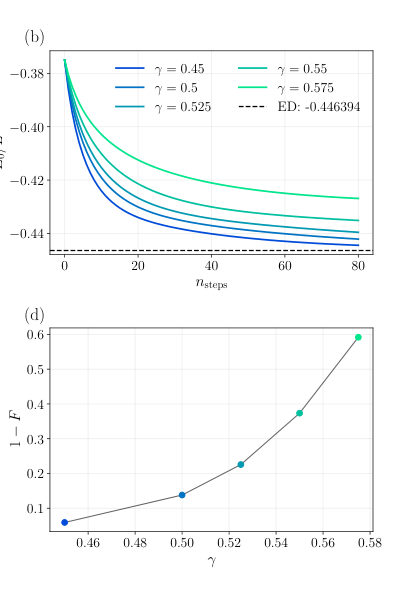
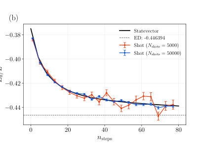
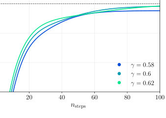
Summary. The paper introduces svPITE, a Python package designed to implement the probabilistic imaginary-time evolution algorithm for quantum many-body systems. It offers both state-vector and shot-based simulation modes, allowing researchers to optimize algorithm parameters and benchmark quantum algorithms against exact classical results. The package is particularly useful for preparing ground states and computing dynamical spectral functions in spin models.
Why it may be interesting. It provides a highly optimized numerical tool for simulating many-body dynamics and ground-state properties, bridging the gap between classical state-vector benchmarks and realistic shot-based quantum device simulations.
Main problem. The need for efficient ground-state preparation and thermal state simulations in quantum many-body physics, specifically addressing the challenge of implementing non-unitary imaginary-time evolution on quantum devices.
Main result. The development of the svPITE Python package, which provides an efficient state-vector-based implementation of the probabilistic imaginary-time evolution algorithm that converges to exact results in the infinite-shot limit.
Method. A Python-based implementation of the Probabilistic Imaginary-Time Evolution (PITE) algorithm, featuring both state-vector-based (infinite-shot limit) and shot-based (stochastic) simulation modes, integrated with Qiskit and QuSpin.
Model / system. Quantum many-body spin systems, including 1D and 2D Heisenberg models (XXZ) and Transverse Field Ising Models (TFIM) with periodic boundary conditions.
Key observables. Ground-state energy per site, success probability, infidelity, and spectral functions such as the spin-spin dynamical structure factor.
Important parameters / regimes. The PITE tuning parameter gamma, imaginary-time step size delta-tau, Trotter order, and the number of shots for shot-based simulations.
Assumptions / limitations. The Hamiltonian class is currently limited to single-site and two-site Pauli couplings (e.g., XX, YY, ZZ) and does not yet support more complex mixed terms like XY.
Figures summary. Figures illustrate the PITE quantum circuit, comparisons of energy convergence and success probability between shot-based and state-vector methods, parameter sweeps of gamma, and the computation of the dynamic structure factor.
Paper structure. The paper introduces the scientific problem of non-unitary evolution, describes the svPITE software architecture and Hamiltonian representation, presents validation against Exact Diagonalization, demonstrates performance benchmarks for 1D and 2D models, and showcases applications in calculating dynamical correlation functions.
We present a Python package for ground-state preparation based on the probabilistic imaginary-time evolution algorithm, with particular focus on its state-vector-based implementation. A standard shot-based simulation is also supported, and results can be benchmarked against exact diagonalisation via a dedicated wrapper. The package enables efficient tuning of initial parameters, facilitating systematic exploration and optimisation of the method's performance. Starting from the prepared ground state, the strong interoperability with other packages further enables real-time evolution and the computation of spectral functions, such as the spin-spin dynamical structure factor.
Authors: Yang Wei Koh, Youjin Deng
Type: theory · Category: quantum information and computing · PDF: https://arxiv.org/pdf/2605.07144v1
Analysis basis: abstract only; PDF text extraction failed or PDF unavailable
Topic relevance: non-equilibrium dynamics 2/5
Summary. This paper presents a numerical study of quantum annealing using a particle-in-a-box model with various energy landscapes. It identifies a phenomenon called 'flat gaps' that explains why wave functions get trapped in local minima during the annealing process. The results show that the residual energy is surprisingly robust against changes in landscape roughness and annealing depth.
Why it may be interesting. It provides new insights into the failure of the Landau-Zener approximation in continuous space annealing and introduces 'flat gaps' as a mechanism for localization/trapping, which is relevant to understanding decoherence and errors in quantum annealing protocols.
Main problem. The paper investigates the dynamics of continuous space quantum annealing, specifically focusing on how energy landscapes and annealing speeds affect residual energy and wave function trapping.
Main result. The study finds that residual energy is largely independent of landscape roughness and annealing depth, and introduces the concept of 'flat gaps' to explain wave function trapping in local minima during diabatic transitions.
Method. Numerical solution of the Schrödinger wave equation for a particle-in-a-box model.
Model / system. A particle-in-a-box model representing continuous space quantum annealing, featuring sinusoidal energy landscapes modulated by concave, convex, or flat envelopes.
Key observables. Energy spectrum, residual energy, energy gap spectrum, and diabatic transition prevalence.
Important parameters / regimes. Annealing speed, landscape roughness, annealing depth, and the shape of the energy envelope.
Assumptions / limitations. The system is treated within a continuous space particle-in-a-box framework using direct Schrödinger equation integration.
Paper structure. The paper proposes a model, analyzes static energy spectra and dynamical residual energy across different landscapes, discusses discrepancies with the Landau-Zener formula, and concludes with a mechanism for wave function trapping based on 'flat gaps'.
A particle-in-a-box model of continuous space quantum annealing is proposed and studied numerically by solving the Schrödinger wave equation directly. Three types of energy landscapes with multiple local minima are considered, namely a sinusoidal wave modulated by a concave, a convex, or a flat envelope. Both static (energy spectrum) and dynamical (residual energy) behaviors are analyzed in detail, paying particular attention to the effects of landscape roughness and annealing depth. Simulation results show that the residual energy as a function of annealing speed is largely independent of these two factors. The prevalence of diabatic transitions during annealing is observed, and the discrepancy between our numerical results and the Landau-Zener formula is discussed. An interesting feature in the energy gap spectrum, which we call flat gaps, is examined. Based on it, we propose a mechanism to explain the trapping of wave function in local minima during diabatic transitions, widely observed in our data.
Authors: Yoshiki Fukusumi, Shuma Nakashiba
Type: theory · Category: strongly correlated electrons · PDF: https://arxiv.org/pdf/2605.07734v1
Analysis basis: abstract only; PDF text extraction failed or PDF unavailable
Topic relevance: entanglement & information structure 2/5
Summary. This paper explores how gapped phases can exhibit unusual structures that do not belong to the standard set of boundary critical phenomena. By studying dualities in RG flows, the authors show that these phases can involve the spontaneous breaking of non-invertible symmetries, providing a new framework for describing complex phase transitions.
Why it may be interesting. not directly relevant
Main problem. The paper investigates the classification of gapped phases and massive renormalization group (RG) flows that are dual to massless RG flows under coupling constant sign changes, specifically focusing on cases where the gapped phase structure is unusual.
Main result. The authors find that the module of gapped phases can lie outside the module of boundary critical phenomena, characterized by the spontaneous breaking of non-group-like (noninvertible) symmetries and the use of unphysical smeared Ishibashi states.
Method. The study utilizes a formalism combining Higgs- or Nambu-Goldstone-type arguments with Cardy's smeared boundary conformal field theories (SBCFTs).
Model / system. The study focuses on renormalization group flows, specifically examining the massive RG flow dual to the flow from the tricritical Ising model to the Ising model.
Key observables. Characterizing quantities of gapped phases and the structure of the module of gapped states.
Important parameters / regimes. The sign of the coupling constants and the presence of non-group-like or noninvertible symmetries.
Assumptions / limitations. The analysis assumes the validity of the duality between massless and massive RG flows under coupling sign changes and the applicability of SBCFTs to these models.
Paper structure. The paper introduces a formalism for classifying gapped phases using SBCFTs and Higgs-type arguments, identifies the emergence of unusual structures where gapped states are constructed from unphysical Ishibashi states, provides a specific example using the tricritical Ising model, and generalizes the findings to the breaking of non-invertible symmetries.
We study the classification of the gapped phases or massive renormalization group (RG) flows dual to the massless RG flows under changing the sign of the coupling constants. Whereas our formalism is based on combining Higgs- or Nambu-Goldstone-type arguments with Cardy's smeared boundary conformal field theories (SBCFTs), several puzzling structures arise. More specifically, the established Higgs or Nambu-Goldstone type arguments on the duality imply that the natural basis for the gapped states should be constructed from a set of smeared Ishibashi states, which are unphysical in boundary critical phenomena. Hence, the module of the gapped phases can be outside of that of boundary critical phenomena, whereas one can still calculate characterizing quantities by applying SBCFTs to the models. For example, we demonstrate that the massive RG flow dual to the massless RG flow from the tricritical Ising model to the Ising model, one of the simplest massless RG flows, has this unusual structure. This can be regarded as a quantum field-theoretic analogue of order-disorder coexistence in lattice models. More generally, the resultant gapped phases usually spontaneously break non-group-like symmetry (or noninvertible symmetry). Our work provides systematic quantum field theoretic descriptions of such unusual phases with spontaneous symmetry breaking of non-group-like (or noninvertible) symmetries.
Authors: Sahel Ashhab, Bora Basyildiz
Type: theory · Category: quantum information and computing · PDF: https://arxiv.org/pdf/2605.07374v1
Analysis basis: full PDF text, analyzed in chunks
Topic relevance: entanglement & information structure 2/5
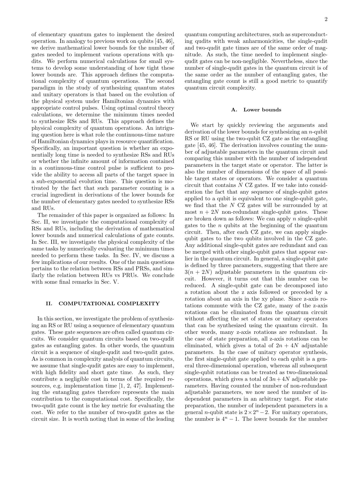
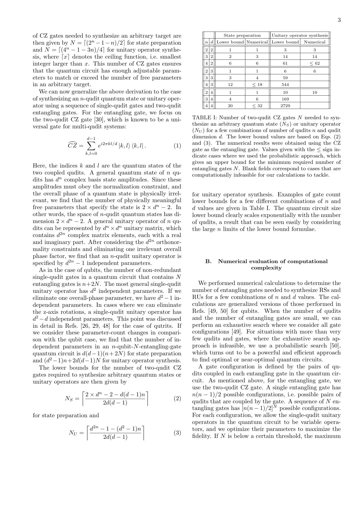
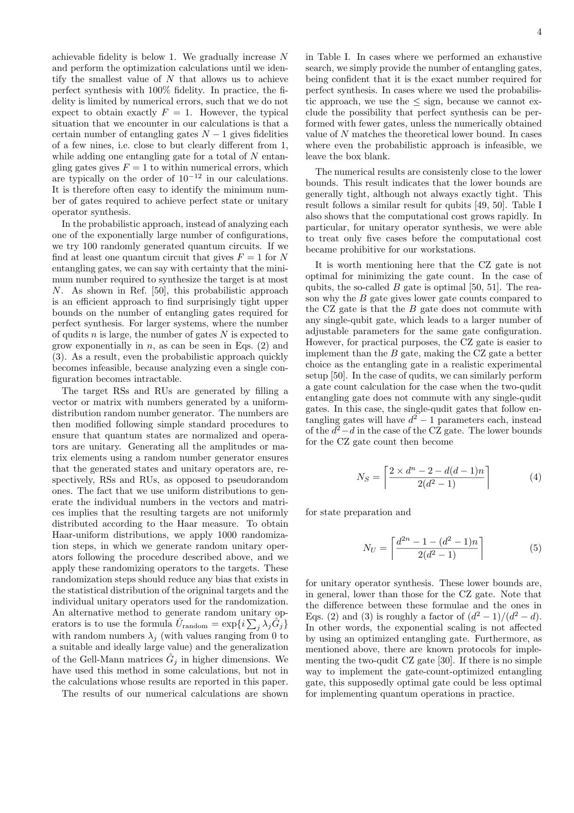
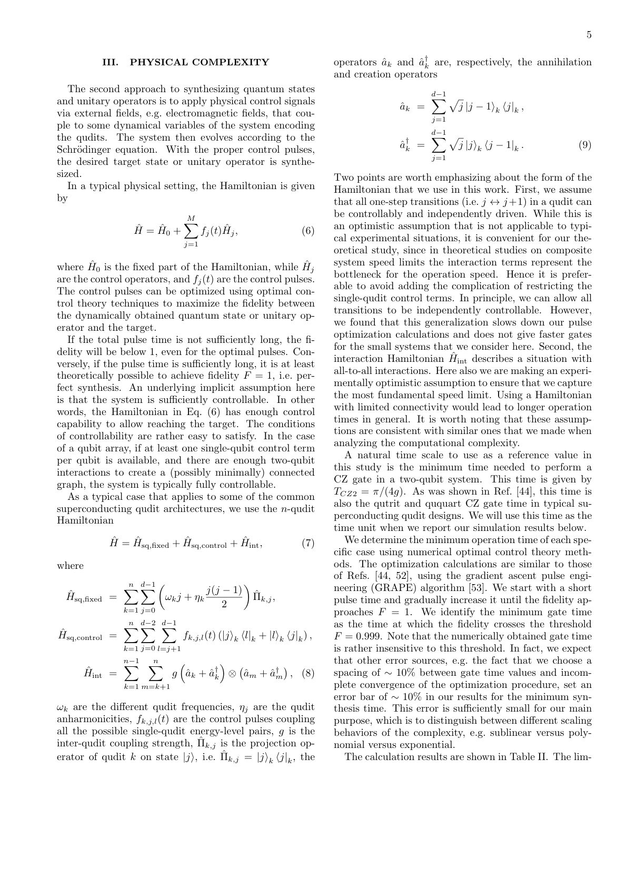
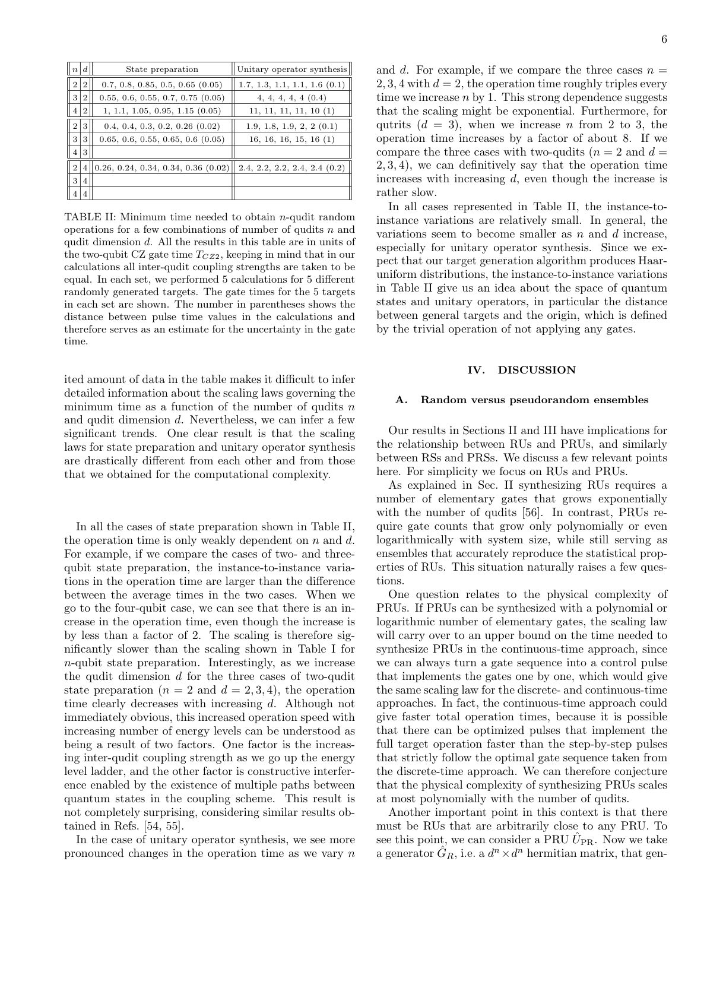
Summary. This paper compares the gate-based computational complexity and the continuous-time physical complexity of preparing random quantum states and unitaries in multi-qudit systems. It finds that while gate requirements grow exponentially with system size, the time required for physical implementation may scale much more favorably. This distinction highlights a potential advantage in using continuous-time control for high-dimensional quantum computing.
Why it may be interesting. It provides fundamental insights into the speed limits of quantum control and the scaling laws of quantum operations, which is crucial for understanding the feasibility of implementing complex quantum algorithms in high-dimensional architectures like superconducting qudits.
Main problem. The paper investigates the complexity of synthesizing random multi-qudit quantum states and unitary operators using two different paradigms: computational complexity (gate count) and physical complexity (minimum operation time).
Main result. The authors show that computational complexity scales exponentially with the number of qudits, while physical complexity (continuous-time control) scales more slowly, with a conjecture that the physical complexity of pseudorandom unitaries scales at most polynomially.
Method. The study combines analytical parameter-counting arguments to derive lower bounds for gate counts with numerical optimal-control-theory (specifically the GRAPE algorithm) to determine minimum synthesis times.
Model / system. The study considers multi-qudit systems (d-level systems) under two models: a discrete gate set consisting of single- and two-qudit CZ gates, and a continuous Hamiltonian model representing superconducting qudit architectures with all-to-all inter-qudit coupling.
Key observables. Computational complexity (number of entangling gates), physical complexity (minimum operation time), and fidelity (F).
Important parameters / regimes. Number of qudits (n), dimension of the qudits (d), coupling strength (g), and the commutator order (k) in the control hierarchy.
Assumptions / limitations. Assumes single-qudit gates are high-fidelity and easy to implement; assumes all-to-all connectivity and independent controllability of all qudit transitions; assumes the primary cost metric is the entangling gate count.
Figures summary. Table I compares theoretical lower bounds for gate counts to numerical results for various n and d; Table II displays minimum operation times for state preparation and unitary synthesis across different system sizes and dimensions.
Paper structure. The paper first defines the two complexity paradigms, then uses parameter counting to derive analytical lower bounds for gate counts, followed by numerical simulations using optimal control to evaluate physical complexity and scaling, and concludes with a discussion on the relationship between random and pseudorandom operators.
We analyze the complexity of synthesizing random states and unitary operators in a multi-qudit system in two paradigms. In one case, we consider the situation in which we manipulate the system by applying a sequence of one- and two-qudit quantum gates that constitute the elementary, and universal, gate set. The minimum number of gates required to perform the desired operation represents the computational complexity. In the other case, we consider the situation in which we manipulate the physical system using physical fields with optimized control pulses. The minimum time required to perform the desired operation represents the physical complexity. In both cases, we use analytical arguments in combination with optimal-control-theory numerical calculations to determine the complexity of random operations. We show that the computational complexity of random states or unitary operators scales exponentially with the number of qudits. Our numerical results suggest that the physical complexity of preparing random quantum states and unitary operators scales more slowly than the computational complexity. We discuss various implications of our results, especially concerning the relationship between random and pseudorandom states and unitary operators.
Authors: J. Ming, Abhisek Bandyopadhyay, G. B. G. Stenning, M. T. F. Telling, N. N. Wang, G. Wang, J. -G. Cheng, D. T. Adroja
Type: experiment · Category: strongly correlated electrons · PDF: https://arxiv.org/pdf/2605.07602v1
Analysis basis: full PDF text, analyzed in chunks
Topic relevance: Kondo & dissipative impurity 2/5
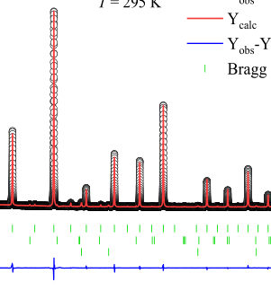
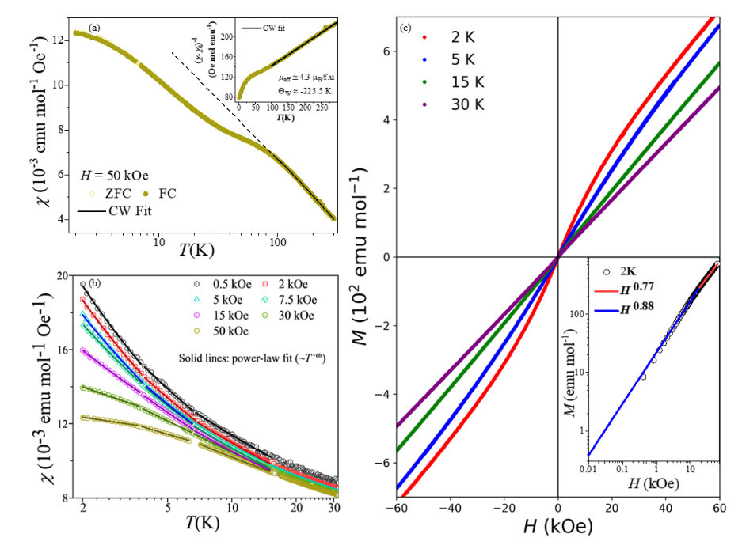
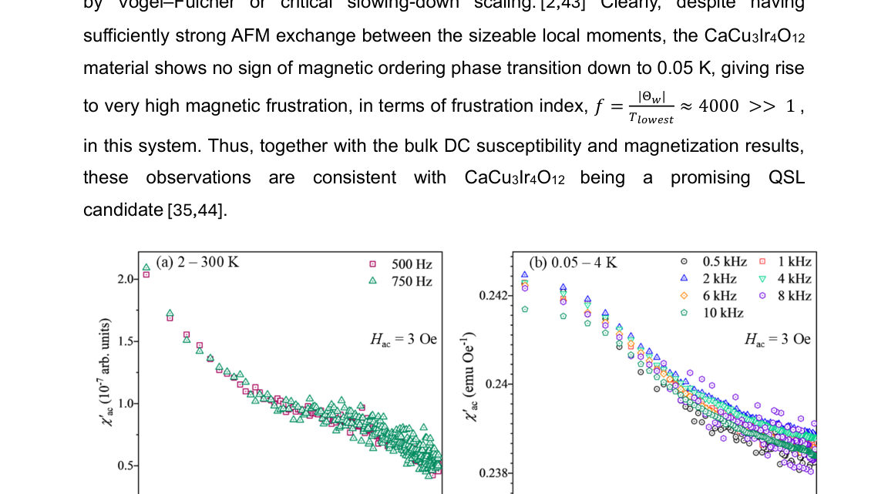
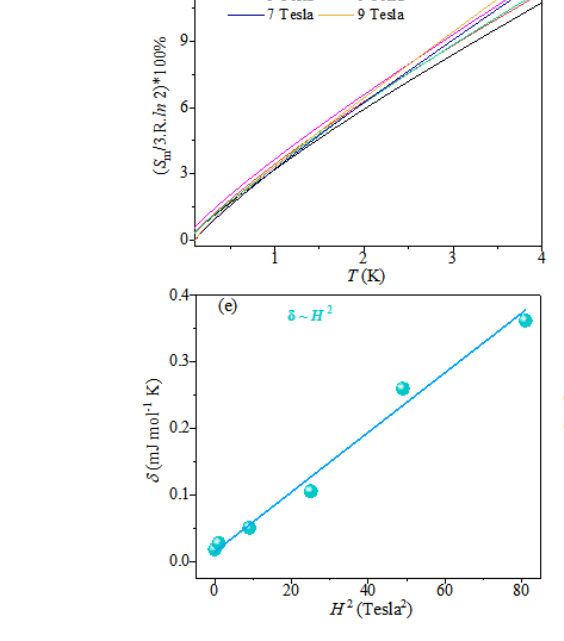
Summary. This paper identifies CaCu3Ir4O12 as a rare 3D quantum-disordered magnet with heavy-fermion characteristics. By using muon spin relaxation, the authors demonstrate that the system maintains dynamic spin fluctuations down to 40 mK, ruling out conventional magnetic ordering or spin-glass freezing.
Why it may be interesting. not directly relevant
Main problem. The study aims to determine whether the 3D oxide CaCu3Ir4O12 possesses a genuine quantum-disordered magnetic ground state, such as a quantum spin liquid, or if it undergoes long-range magnetic ordering or spin freezing.
Main result. The researchers found no evidence of long-range magnetic ordering or spin freezing down to 40 mK, instead observing persistent, truly dynamic quantum spin fluctuations and heavy-fermion behavior.
Method. The study combines bulk thermodynamic probes (DC/AC magnetic susceptibility, heat capacity) with local microscopic probes (zero-field and longitudinal-field muon spin relaxation, muSR).
Model / system. The system is a chemically ordered 3D quadruple perovskite, CaCu3Ir4O12, featuring a mixed 3d/5d electron configuration where Cu2+ (3d) moments are coupled to an extended Ir 5d network.
Key observables. Magnetic susceptibility (chi), heat capacity (Cp), muon spin relaxation rate (lambda), stretched exponent (beta), and Weiss temperature (theta_W).
Important parameters / regimes. Temperature regime down to 40 mK; Weiss temperature theta_W ~ -200 K; large Sommerfeld coefficient gamma ~ 500 mJ/mol/K^2; scaling exponent gamma ~ 0.74.
Assumptions / limitations. The sample is assumed to be nearly pure (97% phase purity) and the minor impurity phases (IrO2 and Ir-metal) are assumed to be weakly paramagnetic and not affecting the bulk ground state.
Figures summary. Figure 1 shows Rietveld-fitted PXRD patterns and the structural coordination of Cu-O bonds; other figures include log-log plots of magnetic properties and muon spin asymmetry curves.
Paper structure. The paper begins with structural characterization via XRD, moves to bulk magnetic and thermodynamic measurements (susceptibility, magnetization, heat capacity), and concludes with local-probe muSR analysis to confirm the dynamic nature of the ground state.
Quantum-disordered magnetic ground states are challenging to identify in three-dimensional (3D) oxides, where strong exchange pathways typically favour long-range magnetic order or spin freezing. The quadruple perovskite $\mathrm{CaCu_3Ir_4O_{12}}$, crystallizing in the cubic $Im\bar{3}$ structure, provides a 3D lattice where $\mathrm{Cu^{2+}}$ $3d$ moments are coupled to an extended Ir $5d$ network, offering a rare platform for probing quantum-disordered magnetism in a mixed $3d/5d$ electron system. Here, we combine bulk probes, including DC and AC magnetic susceptibility, and heat capacity measurements (down to $50~\mathrm{mK}$), along with the local microscopic probe muon spin relaxation ($μ$SR) (down to $40~\mathrm{mK}$), to investigate the true magnetic ground state of $\mathrm{CaCu_3Ir_4O_{12}}$. Despite strong antiferromagnetic interactions ($θ_{\mathrm{W}} \sim -200~\mathrm{K}$, with an applied-field dependence), no signature of long-range magnetic ordering or spin freezing is detected down to the lowest measured temperatures. Furthermore, our in-depth zero-field (ZF) and longitudinal-field (LF) $μ$SR characterizations confirm strong quantum spin fluctuations and the truly dynamic nature of the local moments down to $40~\mathrm{mK}$. These results establish $\mathrm{CaCu_3Ir_4O_{12}}$ as a promising 3D quantum-disordered magnet and a well-characterized platform for exploring fluctuation-dominated states in correlated $3d/5d$ oxides.
Authors: Vladislav Popkov
Type: theory · Category: statistical mechanics · PDF: https://arxiv.org/pdf/2605.06949v1
Analysis basis: full PDF text, analyzed in chunks
Topic relevance: non-equilibrium dynamics 2/5
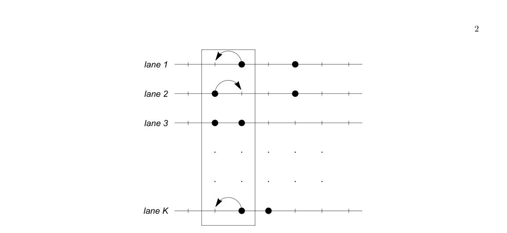
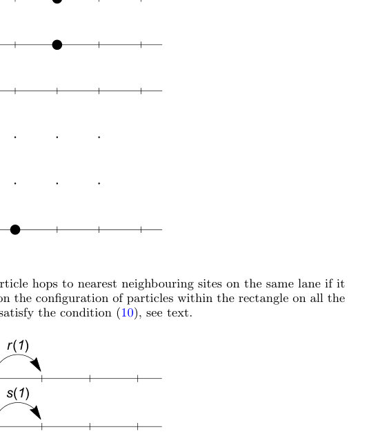
Summary. This paper identifies the specific hopping rate conditions required for a multilane ASEP to maintain a simple Bernoulli stationary state. It provides a generalized formula for particle currents that remains valid even for negative interaction constants, extending previous results beyond uni-directional hopping.
Why it may be interesting. not directly relevant
Main problem. Finding the sufficient conditions for hopping rates in a multilane Asymmetric Exclusion Process (ASEP) to yield a stationary Bernoulli product measure and providing a stochastic interpretation for interaction constants across the full real axis.
Main result. The author derives a specific condition for the difference between forward and backward hopping rates and provides a generalized formula for the stationary particle current as a function of average particle densities.
Method. The study uses the stationary Master equation and an algebraic approach to linearize conditions, employing an iterative summation procedure to extend the solution from two lanes to K lanes.
Model / system. A multilane Asymmetric Exclusion Process (ASEP) consisting of K parallel, mutually interacting lanes where particles follow the exclusion principle and hopping rates depend on the occupation of neighboring lanes.
Key observables. Stationary particle currents (j_alpha) and average particle densities (rho_alpha).
Important parameters / regimes. Hopping rates (r, r', s, s'), interaction constants (gamma_alpha_mu), and the infinite lattice limit.
Assumptions / limitations. The system is in the infinite lattice limit with a Bernoulli stationary state (zero correlation length) and lane changes are forbidden.
Figures summary. Figure 1 shows a schematic of the multilane ASEP setup and hopping rate dependence; Figure 2 illustrates the notation for a two-lane ASEP model.
Paper structure. The paper begins by defining the multilane ASEP model, solves the two-lane case to identify necessary rate relationships, uses iterative summation to generalize to K lanes, and concludes with the derivation of the current formula.
We consider an Asymmetric Exclusion Process evolving on parallel mutually interacting lanes with neighbouring nearest hoppings of hardcore particles. Number of particles on each lane is conserved. We find a choice of the hopping rates, for which the process has Bernouilli stationary product measure, and calculate the stationary particle currents as a function of average particle densities.
Authors: Sagar Patange, Caitao Zhan, Bikun Li, Joaquin Chung, Allen Zang, Liang Jiang, Rajkumar Kettimuthu
Type: theory · Category: quantum information and computing · PDF: https://arxiv.org/pdf/2605.06928v1
Analysis basis: full PDF text, analyzed in chunks
Topic relevance: entanglement & information structure 2/5
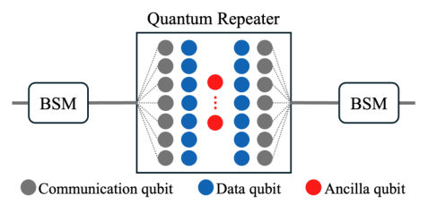
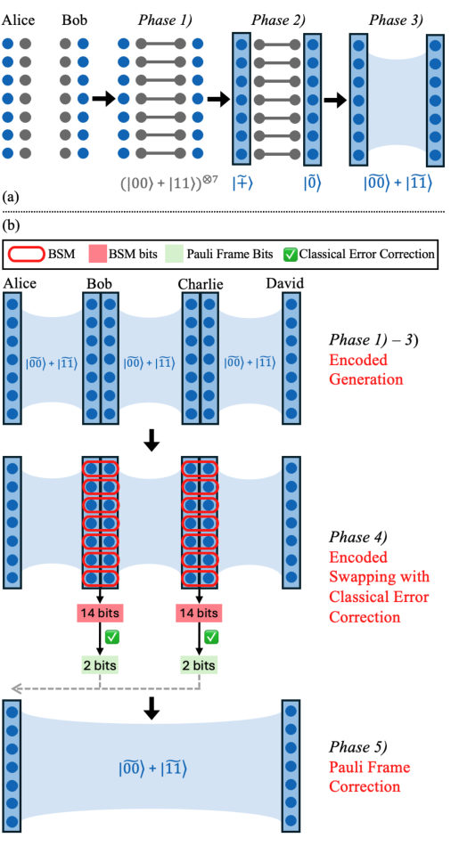
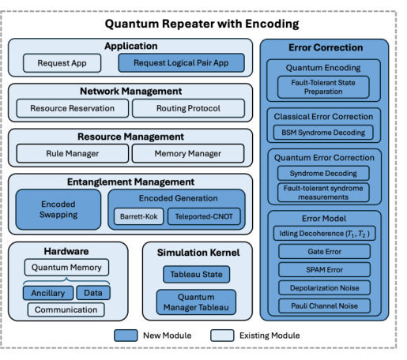
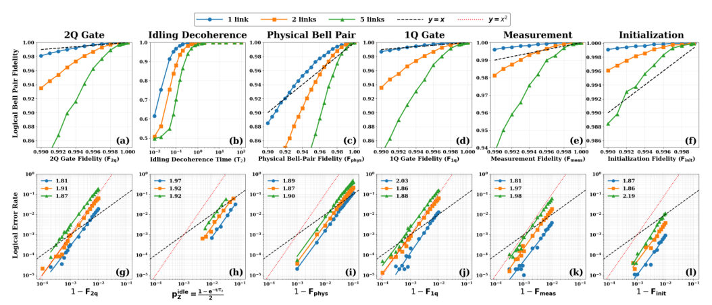
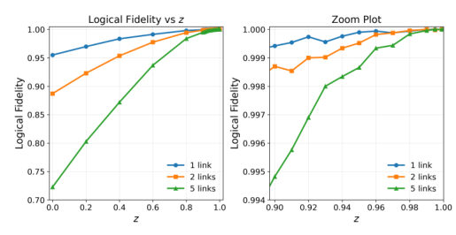
Summary. This paper presents a realistic simulation of a quantum repeater protocol that combines quantum encoding (Steane code) with classical error correction. The study demonstrates that this approach can suppress errors to the second order, enabling high-fidelity entanglement distribution over continental distances of 2000 km.
Why it may be interesting. This work is highly relevant for researchers in quantum optics and open quantum systems as it addresses the practical challenges of maintaining entanglement in the presence of realistic decoherence and hardware noise in large-scale quantum networks.
Main problem. Evaluating the practical performance of the Quantum Repeater with Encoding and Classical Error Correction (QRE-CEC) protocol under realistic, system-level conditions, specifically bridging the gap between theoretical protocols and realistic implementation.
Main result. The QRE-CEC protocol suppresses modeled errors to the second order and can maintain a logical Bell pair fidelity of 0.91 over a distance of 2000 km, significantly outperforming protocols without classical error correction.
Method. The authors extended the SeQUeNCe discrete-event simulator with a stabilizer-based backend using the Stim toolkit to efficiently simulate CSS code-based operations and noise models.
Model / system. A linear network of second-generation quantum repeaters using the Steane [7, 1, 3] code, featuring communication, data, and ancilla qubits, with noise models including depolarizing gates, photon loss, and idling decoherence.
Key observables. End-to-end logical Bell-pair fidelity, total protocol latency, and logical error rate suppression.
Important parameters / regimes. Inter-node distance (up to 2000 km), number of links (up to 100), gate fidelities, coherence times (T1, T2), and fiber attenuation.
Assumptions / limitations. The study assumes a specific 2G-type repeater architecture using the Steane code and focuses on the ability to derive idling decoherence from T1 and T2 parameters.
Figures summary. Figure 1 shows the internal repeater structure; Figure 2 details the five phases of the QRE-CEC protocol; Figure 3 shows the Steane encoder circuit; Figure 4 details the gate teleportation circuit; Figure 5 illustrates the SeQUeNCe simulator extensions; Figure 6 shows error suppression scaling.
Paper structure. The paper introduces the QRE-CEC protocol, describes the implementation of the extended SeQUeNCe simulator, details the physical noise models and hardware parameters, presents simulation results regarding fidelity and latency across various network scales, and discusses the trade-offs between circuit depth and error suppression.
Quantum repeaters are essential for scalable long-distance quantum networking. As quantum information processing moves toward fault-tolerant and error-corrected operations, it becomes increasingly important to study quantum repeaters that also move beyond raw physical entanglement and towards logical entanglement. In this paper, we implement and simulate the quantum repeater with encoding and classical error correction (QRE-CEC) protocol in SeQUeNCe, a discrete-event simulator of quantum networks. The protocol distributes logical Bell pairs, performs encoded entanglement swapping, and uses classical error correction for the decoding of entanglement swapping measurement outcomes to determine Pauli-frame corrections. For this study, we extend SeQUeNCe with a stabilizer-based backend, add support for CSS code-based encoded operations, and integrate gate, measurement, idle decoherence, and state-initialization noise models. Our simulation results show that QRE-CEC suppresses all modeled errors to the second order. Also, QRE-CEC can distribute logical Bell pairs with 0.91 fidelity over a distance of 2000 km under the parameter regimes we study. Beyond protocol-level performance evaluation, our implementation exposes practical simulator and control-plane challenges that are typically abstracted away in theoretical studies.
Authors: Shuhei Kanda, Satoru Hayami
Type: theory · Category: strongly correlated electrons · PDF: https://arxiv.org/pdf/2605.07118v1
Analysis basis: full PDF text, analyzed in chunks
Topic relevance: Keldysh / 2PI / non-Gaussian methods 2/5
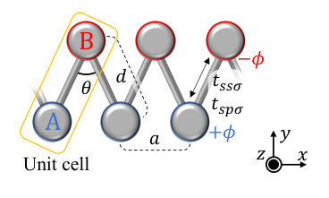
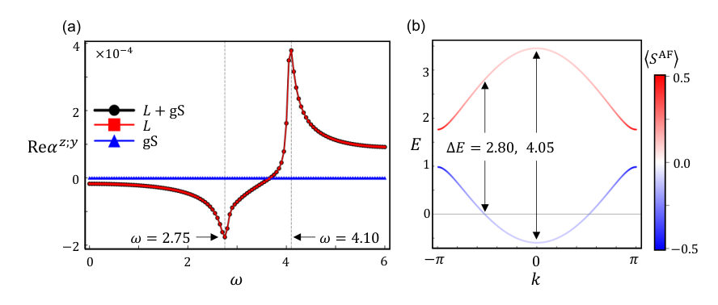
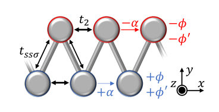
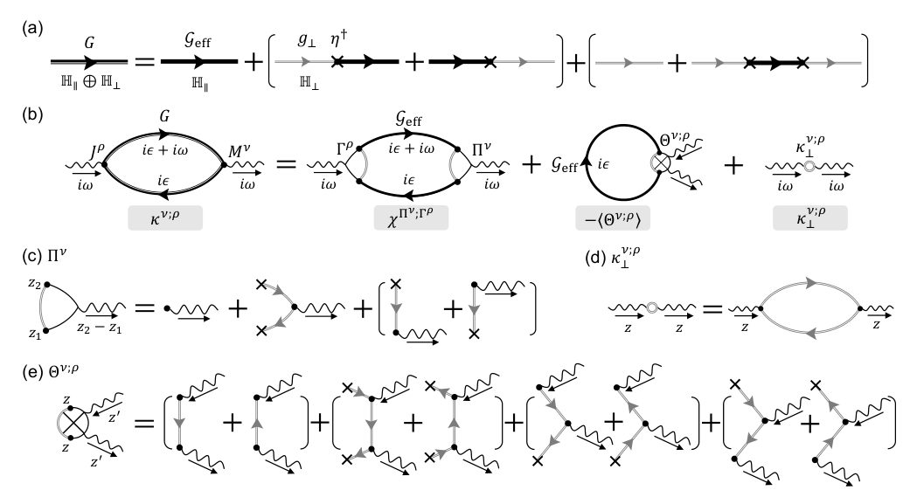
Summary. This paper provides a systematic framework for deriving accurate low-energy effective models for magnetoelectric responses in systems with orbital hybridization. It demonstrates that the ME effect in zigzag chains originates from virtual interorbital processes that must be captured via vertex corrections to satisfy fundamental conservation laws.
Why it may be interesting. not directly relevant
Main problem. Conventional low-energy effective models fail to capture the finite magnetoelectric (ME) response in collinear antiferromagnetic zigzag chains because they neglect high-energy orbital hybridization and necessary vertex corrections.
Main result. The authors develop a renormalized Kubo formula using a zeta-approximation that incorporates vertex corrections and hybridization, successfully reproducing the full multi-orbital ME response and preserving spin-z conservation.
Method. The study employs a downfolding approach via the Schur complement to derive an effective Hamiltonian, combined with the Matsubara Green's function formalism and numerical analytic continuation.
Model / system. A multi-orbital tight-binding model of a quasi-one-dimensional collinear antiferromagnetic zigzag chain, explicitly including both s- and p-orbital degrees of freedom and s-p hybridization.
Key observables. Magnetoelectric (ME) tensor component (alpha_z;y), orbital magnetization, and spin magnetization.
Important parameters / regimes. s-p energy separation (delta_p), apex angle (theta), hopping integrals (t_ss_sigma, t_sp_sigma), and AFM molecular field (phi).
Assumptions / limitations. Neglects p-p orbital hopping; assumes the chemical potential lies outside the high-energy p-orbital window.
Figures summary. Figure 1 shows the model schematic; Figure 5 compares orbital and spin magnetization across different calculation methods; Figure 7 demonstrates the agreement between the effective and full models at both Matsubara and real frequencies.
Paper structure. The paper introduces the microscopic problem, defines the multi-orbital s-p model, derives the effective Hamiltonian via downfolding, identifies the failure of naive low-energy models, proposes a renormalized framework with vertex corrections (zeta-approximation), and validates the approach against the full model.
Magnetoelectric (ME) effects in antiferromagnets provide a fertile platform for exploring symmetry-driven cross-correlated responses. However, their microscopic origin remains elusive and is often obscured in simplified low-energy descriptions. In this study, we revisit the microscopic mechanism of the ME effect in a collinear antiferromagnetic zigzag chain by employing a multi-orbital tight-binding model that explicitly includes both $s$- and $p$-orbital degrees of freedom. Using analytical and numerical calculations based on the Kubo formula, we demonstrate that the ME response is governed by orbital degrees of freedom activated through $s$--$p$ hybridization, while the spin contribution vanishes due to spin conservation. To elucidate the low-energy description, we derive an effective Hamiltonian projected onto the $s$-orbital subspace using the Schur complement. We show that a naive application of the Kubo formula within this effective model fails to capture the ME response. This issue is resolved by systematically incorporating vertex corrections in terms of orbital hybridization into the response functions. Furthermore, by introducing a quasiparticle renormalization scheme, we formulate a renormalized Kubo formula that preserves conservation laws and accurately reproduces the full multi-orbital results. Our analysis revisits the conventional low-energy perspective and reveals that the ME effect originates from virtual interorbital processes encoded in vertex corrections, rather than from the bare low-energy Hamiltonian. The effective framework developed here provides a unified microscopic understanding of orbital-driven ME responses and offers a systematic route to incorporate hybridization effects beyond simple low-energy models.
Papers from primary archives without highlighted authors or any topic match. Click to expand.
Authors: Aman Yacob Tekleab, Yifeng Shen, Yoshii Yutaro, Amin Taherkhani, Rodney Van Meter, Shota Nagayama
Type: theory · Category: quantum information and computing · PDF: https://arxiv.org/pdf/2605.07295v1
Analysis basis: abstract only; PDF text extraction failed or PDF unavailable
Summary. This paper proposes a new distributed protocol for managing resources in quantum networks that use shared optical switches. By allowing nodes to independently reserve paths to a shared Bell State Analyzer, the protocol enables scalable and automated entanglement-based networking. Simulations show that the protocol remains effective even as network traffic increases.
Why it may be interesting. not directly relevant
Main problem. The challenge of efficient resource allocation and multiplexing in unbuffered, multidrop quantum networks that utilize shared optical switches and Bell State Analyzers (BSAs).
Main result. The proposed distributed switching protocol achieves high link establishment success and maintains stable performance even under increased network traffic loads.
Method. A distributed protocol where end nodes cooperatively select the lowest-cost BSA node and perform independent bi-path reservations to allocate network resources.
Model / system. Unbuffered, multidrop quantum networks in a photonic synchronization domain, specifically evaluated using Q-Fly network topologies.
Key observables. Link establishment success rate and network performance under varying traffic loads.
Important parameters / regimes. Network traffic load and path cost.
Assumptions / limitations. The network uses memoryless optical switches and operates within a photonic synchronization domain.
Paper structure. The paper introduces the problem of resource allocation in switched quantum networks, proposes a distributed switching protocol based on bi-path reservations, and validates the protocol through simulations on Q-Fly topologies under different traffic conditions.
With the advent of the construction and deployment of entanglement-based quantum networks, the efficient use of network resources will become a critical challenge for the scalable operation of such a system. Recently, architectures that incorporate memoryless optical switches have gained attention for forwarding entangled photons. By leveraging these architectures, costly resources such as high efficiency Bell State Analyzers (BSAs) can be shared across the network. Nevertheless, the introduction of switching substantially complicates the process of multiplexing and resource allocation compared to an individual link. In this work, we propose a switching protocol for unbuffered, multidrop quantum networks in a photonic synchronization domain that establishes a link between two end nodes using a shared BSA in the switched network. To achieve this, two end nodes cooperatively select the target BSA node with the lowest path cost and independently reserve each path within the network. Bi-path reservations are performed to allocate resources in a distributed manner. The proposed protocol is evaluated through simulation on Q-Fly network topologies under varying traffic conditions. The results demonstrate high link establishment success with stable performance even under increased network load. These capabilities which are driven by our proposed protocol are an essential way to realize large-scale, managed, and automated quantum networks.
← Index · ← Previous · Next →